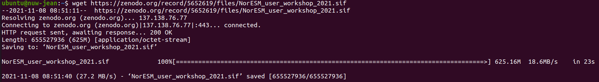
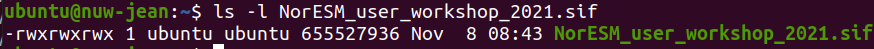
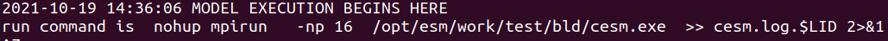
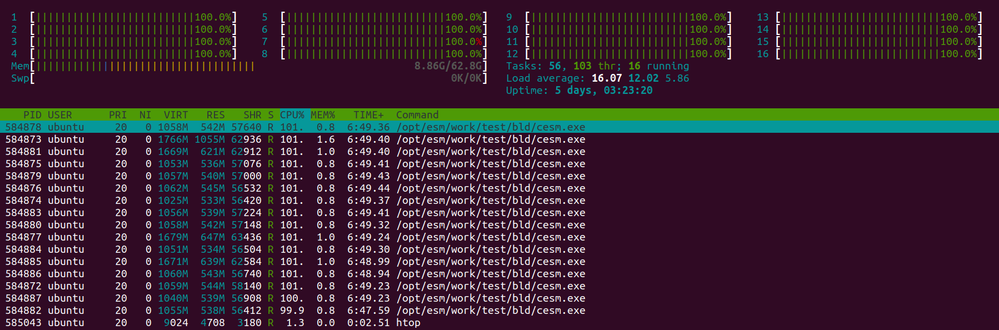
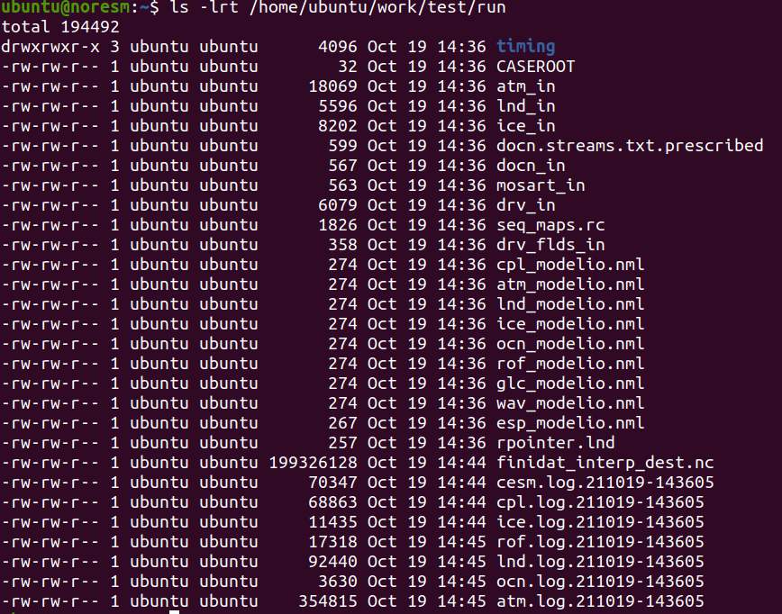
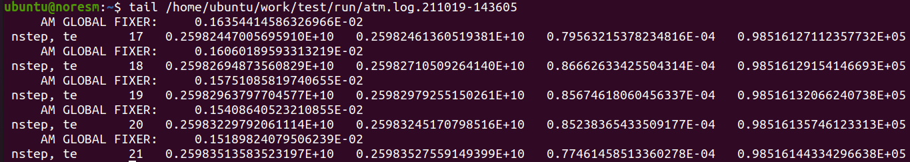
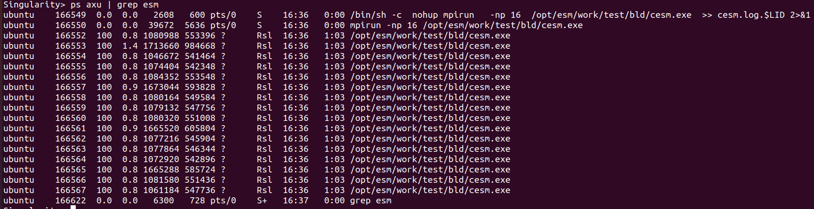
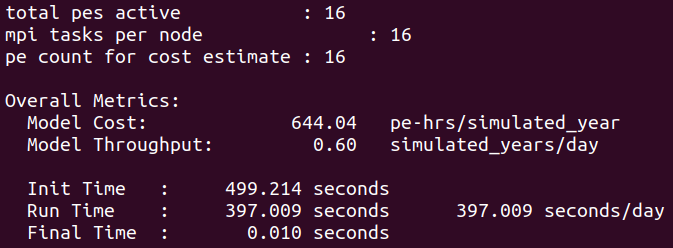
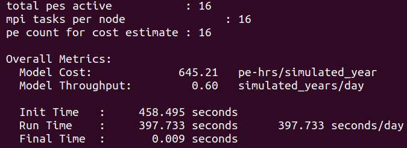
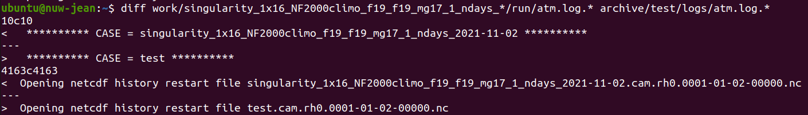

On the Virtual Machine¶
From “inside-out”¶
Login on your own Virtual Machine with the private SSH key corresponding to the public key that you provided the Organizers of this Workshop (it does not grant you access to any other Virtual Machine anyway):
ssh -i ~/.ssh/YourPrivateSSHkey ubuntu@aaa.bb.cc.ddd
Each Virtual Machine features 16 VCPUs + 64GB RAM + 80GB root disk, and comes with:
an Operating System (OS) with the default C/C++/FORTRAN compilers
a Message Passing Interface (MPI) library, required for the hands-on exercise on “outside-in” interaction with the container (but not for “inside-out”)
Singularity
already installed, nothing else
Note
Use the actual path to where your SSH keys are stored on your laptop (instead of ~/.ssh/), replace @aaa.bb.cc.ddd by the IP address that you have been allocated, and all use the same user name (ubuntu)
Basic verifications¶
Login on your Virtual Machine and verify that a container engine is available
Exercise 1
Check which version of Singularity is installed on your Virtual Machine
singularity --version
singularity version 3.8.3
Exercise 2
Check the architecture, model and number of processors available on the Virtual Machine
lscpu
Architecture: x86_64
CPU(s): 16
Model name: Intel Core Processor (Haswell, no TSX)
CPU MHz: 2294.608
Preparation of the necessary folders and input data¶
Create the work and archive folders in your $HOME directory
cd $HOME
mkdir work archive
Get the inputdata from Zenodo 
wget https://zenodo.org/record/4683483/files/inputdata_NF2000climo_f19_f19_mg17.tar.gz
Extract (or untar) all the files from the archive
tar zxvf inputdata_NF2000climo_f19_f19_mg17.tar.gz
This will add the inputdata folder on $HOME and will be much faster than downloading individual files on-the-fly, hence saving us a lot of time.
Pull the container image and execute it¶
Get the NorESM container from Zenodo 
wget https://zenodo.org/record/5652619/files/NorESM_user_workshop_2021.sif
The download should take less than 1 minute:

Type the following commands to change the access permissions of the .sif file (i.e., to make it executable), then start a Singularity container and run an interactive shell within it
chmod ugo+rwx NorESM_user_workshop_2021.sif
ls -l NorESM_user_workshop_2021.sif

singularity shell --contain NorESM_user_workshop_2021.sif
Note
Inside the container the Bash shell prompt (Singularity>) is different from that on the host (where, depending on the name that was given to your Virtual Machine when it was created, it will be something like ubuntu@nuw_name:)
Exercise 3
Once inside the container explore, navigate through the folders, try to create new files in the home directory (/home/ubuntu), for instance create a file called text.txt, what happens?
Now exit the container and try to see whether the text.txt file is accessible on the host
pwd
touch text.txt
ls
exit
ls
You should be able to create new files and new folders inside the container, without any error or warning, however these files and folders will not exist outside
This is because the - - contain flag will use minimal /dev and empty other directories (e.g., /tmp) instead of sharing filesystems from your host
Without this flag, by default, the home directory, the current working directory, but also some system folders (/tmp, /proc, /sys and /dev) are automatically included inside each container: these are in fact those from the host (and any alteration done from inside the container, voluntarily or not, will be permanent, therefore be very cautious)
Run the container with bindings¶
To be able to share files and folders between the container and the host, explicit binding paths have to be specified in the format src:dest, where src and dest are paths outside and inside of the container, respectively, separated by a colon (:)
Shared work and archive directories will allow us to access model outputs from the host, even after the container ceased to exist. Also the shared inputdata which was created and populated from the host can be made accessible inside the container
singularity shell --bind $HOME/work:/opt/esm/work,$HOME/inputdata:/opt/esm/inputdata,$HOME/archive:/opt/esm/archive NorESM_user_workshop_2021.sif
This means for instance that the content of the directory known as $HOME/archive on the host can be accessed on /opt/esm/archive inside the container, and vice versa
Create a new simulation, set it up, compile and run it inside the container¶
The source code for NorESM (release 2.0.5) can be found inside the container in /opt/esm/my_sandbox
A machine named “virtual” has already been configured with the correct compilers, libraries and paths inside the container
Exercise 4
Create a new case called “test” in the /opt/esm/archive/cases directory with the NF2000climo compset and f19_f19_mg17 resolution
Modify (with the xmlchange tool) the necessary environment variables to only run the simulation for 1 day
Change the number of tasks so that all the processors available on the Virtual Machine (single node) are used for all the model components (instead of ‘NTASKS_ATM’: -2, etc.)
Then perform the setup, compile and run the simulation
cd /opt/esm/my_sandbox/cime/scripts/
./create_newcase --case /opt/esm/archive/cases/test --compset NF2000climo --res f19_f19_mg17 --machine virtual --run-unsupported
cd /opt/esm/archive/cases/test
./xmlchange STOP_N=1
./xmlchange STOP_OPTION=ndays
./xmlchange --file env_mach_pes.xml --id NTASKS --val -1
./case.setup
./case.build
./case.submit
If everything went well the run will start

Note
nohup is a POSIX command which means “no hang up”, its purpose is to execute a command such that it ignores the HUP (hangup) signal and therefore does not stop when the user logs out (From https://en.wikipedia.org/wiki/Nohup)
Then you can type:
Ctrl+Z to stop (pause) the program and get back to the shell
bg to run it in the background
You can then if you wish exit the container (with the exit command) and re-enter it with the same command that you have used to run it with bindings (singularity shell - - bind … workshop_2021.sif)
Monitor your run¶
To monitor your job from outside the container while it is still running you can open a 2nd terminal and login like on the 1st one, then type the following command
htop

On the upper part of the window is displayed information about the CPU and memory usage, and in the bottom part is a table listing the various processes which are running on the Virtual Machine, and in this instance the 16 cesm.exe tasks, their process ID, etc.
Exercise 5
Check the simulation progress in the workdir
New output files and log files are created as the model runs, so check for example their size and/or content to get an idea about what is going on during the simulation
Notice how, at the begining of the run, only finidat_interp_dest.nc and the lnd.log file grow in size as the LAND component is initialized (and interpolations are being performed)
ls -lrt /home/ubuntu/work/test/run

Verify which time steps the CAM component has completed:
tail /home/ubuntu/work/test/run/atm.log*

(there are 48 time steps per 24h simulation)
You can still use from inside the container the ps axu command to monitor the processes running on your Virtual Machine (and in particular those related to your ESM run):
ps axu | grep esm

Run time, cost and model throughput¶
After the end of the simulation it is possible to obtain general information about the total run time and cost as well as several metrics to facilitate analysis and comparisons with other runs
Exercise 6
Have a look at the timing profile located in the case directory from outside the container
cat /home/ubuntu/archive/cases/test/timing/cesm_timing.*

From “outside-in”¶
Let’s now do the same simulation in a more automated way using the bash script called “job_vm.sh” which comes in the container (and can be extracted from /opt/esm)
cd /home/ubuntu
singularity exec NorESM_user_workshop_2021.sif cp /opt/esm/job_vm.sh .
For the sake of convenience this bash script follows the same structure as the Slurm job batch script which will be used on Betzy
This will export several environmental variables (number of nodes, CPUs, etc.), then create the new case, do the setup, compile, run the simulation and generate the timing profile
Submit the job on the Virtual Machine by typing the following command:
bash job_vm.sh
This time we use the sequence mpirun singularity … esm.exe (instead of singularity mpirun … esm.exe)
Exercise 7
Monitor this run, and at the end compare the timing profile to the one obtained “inside-out”
cat /home/ubuntu/archive/cases/singularity_1x16_NF2000climo_f19_f19_mg17_1_ndays_2021-10-19/timing/cesm_timing.singularity_1x16_NF2000climo_f19_f19_mg17_1_ndays_2021-10-19.999999-999999

Notice the similitude of the performance when running “inside-out” (mpirun used inside the container) and “outside-in” (mpirun invoked from outside the container): on a single node machine it virtually makes no difference to the run time and model throughput
Exercise 8
Can you spot any difference between the outputs of the simulations performed from “inside-out” and “outside-in”, for instance by comparing the atm.logs?
cd /home/ubuntu
gunzip archive/test/logs/atm.log.*
diff work/singularity_1x16_NF2000climo_f19_f19_mg17_1_ndays_*/run/atm.log.* archive/test/logs/atm.log.*

Apart from expected differences in the case name and creation date/time they are absolutely identical